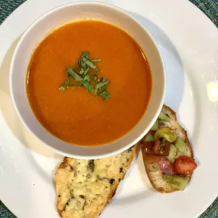

Description
We're doing a very fresh twist on the classic cream of tomato soup with a
grilled cheese sandwich. Since we're using fresh tomatoes at their peak
of vine-ripened goodness, this simple soup is going to be not quite, but
almost, 100% tomato.
Ingredients
- 3 ½ pounds vine-ripened tomatoes
- 4 tablespoons olive oil
- 4 tablespoons unsalted butter
- 2 cloves garlic, minced
- 1 anchovy fillet
- 1 teaspoon salt, or to taste
- 1 pinch red pepper flakes (Optional)
- 8 slices Italian bread
- ¼ cup thinly sliced basil leaves
- 6 ounces shredded sharp white Cheddar cheese
Steps
- Remove cores from tomatoes and cut in half crosswise
- Heat olive oil and butter in a saucepan over medium-high heat
- Add garlic and anchovy and cook until garlic is sizzling in the hot fat, 45 seconds to 1 minute
- Carefully add the tomatoes with their juices, salt, and red pepper flakes
- Toss with a spoon every few minutes until the tomatoes release their liquid and start to break down
- Once the tomatoes have softened and start to collapse, reduce heat to medium-low and cook, stirring occasionally
- Preheat the oven to 450 degrees F
- Line a baking sheet with foil or a silicone liner. Drizzle with 2 tablespoons olive oil
- Place the bread slices on the prepared baking sheet. Top each slice with sliced basil, and then Cheddar cheese
- Bake in the preheated oven until the cheese is well browned and crispy around the edges, 15 to 20 minutes
- Remove soup from heat and pass through a mesh strainer into a bowl
- Use the back of a ladle to push all the tomato mixture through
- Discard the skins and seeds, which should be the only things left in the strainer
- Transfer the strained tomato soup back into the saucepan and place back over medium-low heat
- ontinue cooking to thicken slightly, if desired, or simply bring back to a simmer and serve immediately with the cheese toast